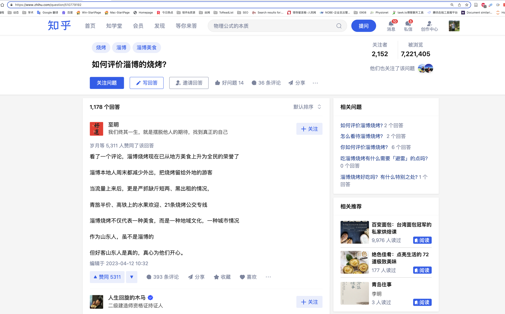
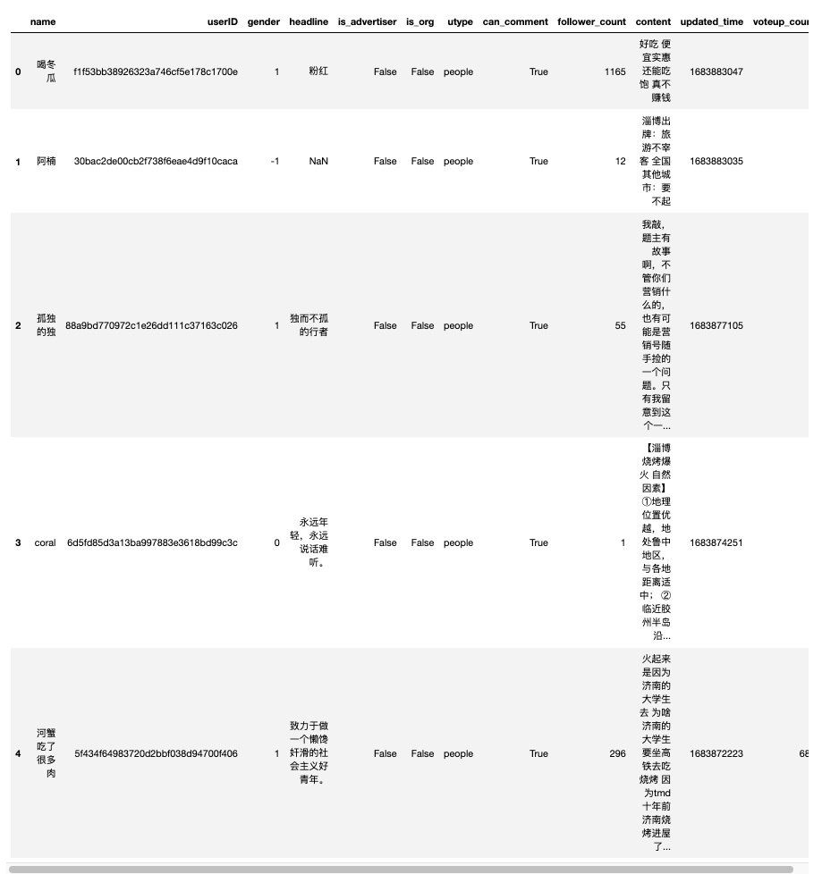
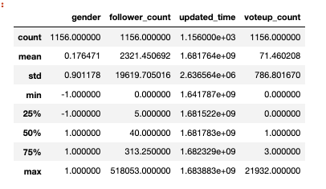
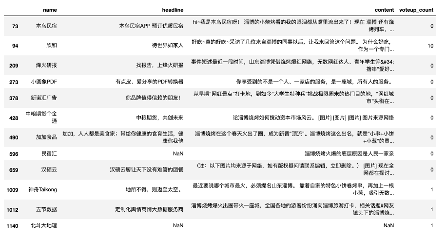
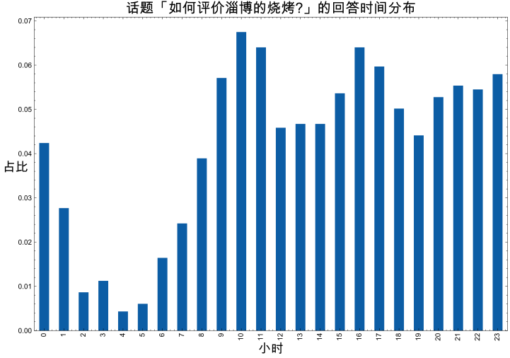

一、采集数据
最近淄博烧烤一直很火，岁数大了，莫名其妙就被有人情味的短视频感动。 我从小在山东长大，一直25岁离开山东。 我记得09年升大学前后，我记得山东宣传的口号「好客山东，欢迎您」，但是一直在生活在山东， 对好客的理解不够深刻。后来走过的地方多了，对比之下才知道「好客山东」 不仅仅是口号，更是山东人民好客的真实写照。 淄博烧烤的出圈，不是口味，也不是价格，是淄博乃至山东仁义价值观的成功。
知乎话题「如何评价淄博的烧烤？」数据采集于2023年5月12日。 之前分享过付费代码， 网络爬虫(付费) | 知乎热门话题「全职儿女」 ，现在免费公开数据采集部分代码。公众号内的代码复制容易出问题， 建议textdata.cn中找本文对应的博文，准确复制代码。

根据截图，获取爬虫运行的初始参数
#话题ID
question_id = 510779192
#话题回答数
reply_num = 1178
https://www.zhihu.com/question/510779192
import csv
import requests
import time
#知乎话题ID
question_id = '510779192'
#当前回答数
reply_num = 1178
#存储csv,文件名为话题ID
with open(f'{question_id}.csv', 'w', encoding='utf-8', newline='') as csvf:
#字段
fieldnames = ['name', 'userID', 'gender', 'headline',
'is_advertiser', 'is_org', 'utype', 'can_comment',
'follower_count', 'content', 'updated_time', 'voteup_count']
writer = csv.DictWriter(csvf, fieldnames=fieldnames)
writer.writeheader()
#网址规律
url = f'https://www.zhihu.com/api/v4/questions/{question_id}/feeds'
next_url = ''
data = {
'include': 'data[*].is_normal,admin_closed_comment,reward_info,is_collapsed,annotation_action,annotation_detail,collapse_reason,is_sticky,collapsed_by,suggest_edit,comment_count,can_comment,content,editable_content,attachment,voteup_count,reshipment_settings,comment_permission,created_time,updated_time,review_info,relevant_info,question,excerpt,is_labeled,paid_info,paid_info_content,reaction_instruction,relationship.is_authorized,is_author,voting,is_thanked,is_nothelp,is_recognized;data[*].mark_infos[*].url;data[*].author.follower_count,vip_info,badge[*].topics;data[*].settings.table_of_content.enabled',
'offset': 0,
'limit': 5,
'order': 'updated'}
headers = {'user-agent': 'Mozilla/5.0 (Macintosh; Intel Mac OS X 10_15_7) AppleWebKit/537.36 (KHTML, like Gecko) Chrome/112.0.0.0 Safari/537.36'}
#循环抓取
max_page = int(reply_num/5)+1
for page in range(1, max_page+1):
time.sleep(1)
#发起访问
if next_url:
resp = requests.get(next_url, headers=headers)
else:
resp = requests.get(url, params=data, headers=headers)
answers = resp.json().get('data')
for answer in answers:
#构造数据，写入csv
linedata = {
'name': answer['target']['author']['name'],
'userID': answer['target']['author']['id'],
'gender': answer['target']['author']['gender'],
'headline': answer['target']['author']['headline'],
'is_advertiser': answer['target']['author']['is_advertiser'],
'is_org': answer['target']['author']['is_org'],
'utype': answer['target']['author']['type'],
'can_comment': answer['target']['can_comment']['status'],
'follower_count': answer['target']['author']['follower_count'],
'content': answer['target']['excerpt'],
'updated_time': answer['target']['updated_time'],
'voteup_count': answer['target']['voteup_count']
}
writer.writerow(linedata)
print(page, linedata)
cursor = answer['cursor']
next_url = resp.json()['paging']['next']
Run
1 {'name': '喝冬瓜', 'userID': 'f1f53bb38926323a746cf5e178c1700e', 'gender': 1, 'headline': '粉红', 'is_advertiser': False, 'is_org': False, 'utype': 'people', 'can_comment': True, 'follower_count': 1165, 'content': '好吃 便宜实惠 还能吃饱 真不赚钱', 'updated_time': 1683883047, 'voteup_count': 0}
1 {'name': '阿楠', 'userID': '30bac2de00cb2f738f6eae4d9f10caca', 'gender': -1, 'headline': '', 'is_advertiser': False, 'is_org': False, 'utype': 'people', 'can_comment': True, 'follower_count': 12, 'content': '淄博出牌：旅游不宰客 全国其他城市：要不起', 'updated_time': 1683883035, 'voteup_count': 0}
1 {'name': '孤独的独', 'userID': '88a9bd770972c1e26dd111c37163c026', 'gender': 1, 'headline': '独而不孤的行者', 'is_advertiser': False, 'is_org': False, 'utype': 'people', 'can_comment': True, 'follower_count': 55, 'content': '我敲，题主有故事啊，不管你们营销什么的，也有可能是营销号随手捡的一个问题。只有我留意到这个一年前的细节了吗？ [图片]', 'updated_time': 1683877105, 'voteup_count': 0}
1 {'name': 'coral', 'userID': '6d5fd85d3a13ba997883e3618bd99c3c', 'gender': 0, 'headline': '永远年轻，永远说话难听。', 'is_advertiser': False, 'is_org': False, 'utype': 'people', 'can_comment': True, 'follower_count': 1, 'content': '【淄博烧烤爆火 自然因素】 ①地理位置优越，地处鲁中地区，与各地距离适中； ②临近胶州半岛沿海城市，海鲜产量大种类多； ③临近寿光蔬菜种植基地，菜多且优惠； ④山东是农业大省、养殖大省，肉类多且实惠，面食品类多； ⑤铁矿煤矿是淄博支柱产业，烧烤所需煤炭等资源丰富。 【淄博烧烤爆火 社会经济因素】 ①交通便利，火车高铁出行便捷，设立多条烧烤专线； ②政策支持，设多条旅游专线，打造文化特色产业； ③品牌效应显…', 'updated_time': 1683874251, 'voteup_count': 0}
......
231 {'name': '刘朗', 'userID': '9910b16a1a160f78eb3145b17ea6c2d7', 'gender': -1, 'headline': '习惯穷追猛打，但凡发现别人挑衅我不回复都是被人拉黑了', 'is_advertiser': False, 'is_org': False, 'utype': 'people', 'can_comment': True, 'follower_count': 1275, 'content': '那我给你说一下我自己吃淄博临淄烧烤怎么吃的行不？ 第一步点菜，淄博烧烤是论把！也就是剔出铁钎后纯肉的重量，现在的一把也是一斤的意思，有些店还是说一斤多少钱，一斤在二十来串左右，那像我临淄不是回民的，我要是俩人去吃，就跟老板说两把带皮五花，十块钱的鱼豆腐，十块钱的板筋，然后我会看看有啥烤的蔬菜，毕竟我还是注重点荤素搭配的，但是只要五块钱的蔬菜，我今年吃的最后一顿烧烤是要了五块钱的烤甘蓝，然后就是点…', 'updated_time': 1643545237, 'voteup_count': 414}
231 {'name': '牛儿还在山坡吃草', 'userID': 'ea9769e15a5b82be698c04c99229685c', 'gender': 1, 'headline': '「不接受反驳」的人，就不应该在公共平台发表观点，不是吗？', 'is_advertiser': False, 'is_org': False, 'utype': 'people', 'can_comment': True, 'follower_count': 70, 'content': '淄博烧烤特别出名，淄博烧烤配有小饼和大葱，先用葱沾一下甜面酱，然后拿两串烧烤撸到饼里，然后撒上芝麻盐，花生碎用小饼一卷，咬一口，就会感觉人间值得。 淄博烧烤是每个淄博人都喜欢吃的美食，曾经在外地读大学的我也经常想念这一味道，吃来吃去每次吃烧烤胖两斤但是仍然抵制不了烧烤的诱惑，吃烧烤在别人眼里显得非常奇怪，但是在淄博人眼中，不吃烧烤才奇怪！ 淄博走两步都是烧烤店，淄博烧烤遍布在淄博的大街小巷，几天不…', 'updated_time': 1641866413, 'voteup_count': 11}
231 {'name': '王屋与太行', 'userID': '64d7364c4811186497e8d68e61af8f91', 'gender': 0, 'headline': '在人群里唱自己的歌', 'is_advertiser': False, 'is_org': False, 'utype': 'people', 'can_comment': True, 'follower_count': 7, 'content': '听说过，没吃过，用饼卷？', 'updated_time': 1641789783, 'voteup_count': 0}
232 {'name': '哆咪喵', 'userID': '768248562c2d0c295092b56c0e5b75d4', 'gender': 0, 'headline': '注册安全工程师、危化行业EHS十年，敬业认真学习能力强', 'is_advertiser': False, 'is_org': False, 'utype': 'people', 'can_comment': True, 'follower_count': 136, 'content': '淄博烧烤独成一派，好吃，几乎每月都有两三次烧烤家庭式聚餐，你值得拥有，如果味道能稍微淡一点就更好了', 'updated_time': 1641787110, 'voteup_count': 3}
二、读取数据
读取刚刚采集的 1156 条回答数据，存储于 510779192.csv
回答数据字段含
- name 用户(知乎回答者)名
- userID 用户ID
- gender 用户性别, 1为男性， 0为女性, -1未知。
- headline 用户签名
- is_advertiser 用户是否为广告人员
- is_org 用户是否为机构
- utype 用户的类型
- follower_count 用户的粉丝数
- content 回答的内容
- can_comment 其他用户是否有权限对该回答进行互动评论
- updated_time 更新时间，时间戳。
- voteup_count 点赞数
import pandas as pd
df = pd.read_csv('510779192.csv', encoding='utf-8')
df.head()

#1178条数据，采集到1156条
len(df)
Run
1156
三、探索性分析
数据存储为csv，可以借助pandas做一些简单的统计性分析。
3.1 性别
df.describe()

#该话题男性占比
#男1， 女0, 未知-1。
male = len(df[df.gender==1])/len(df)
female = len(df[df.gender==0])/len(df)
other_sex = len(df[df.gender==-1])/len(df)
print(f'男性占比 : {male}')
print(f'女性占比 : {female}')
print(f'未知占比 : {other_sex}')
Run
男性占比 : 0.509515570934256
女性占比 : 0.157439446366782
未知占比 : 0.33304498269896193
3.2 用户身份
- 回答者账号是机构号
- 回答者账号是营销者
df.is_org.value_counts()
Run
False 1144
True 12
Name: is_org, dtype: int64
#回答者账号是机构的占比
df.is_org.sum()/len(df)
Run
0.010380622837370242
#回答者账号是机构的
df[df.is_org==True][['name', 'headline', 'content', 'voteup_count']]

3.3 时间
采集的时间数据类似1682334790，是一种时间戳记录方式。
时间戳是某时间距 1970 年 1 月 1 日 00:00:00 UTC 所经过的秒数。
df['updated_time']
Run
0 1683883047
1 1683883035
2 1683877105
3 1683874251
4 1683872223
...
1151 1664872959
1152 1643545237
1153 1641866413
1154 1641789783
1155 1641787110
Name: updated_time, Length: 1156, dtype: int64
import datetime
df['updated_time'] = df['updated_time'].apply(lambda k: datetime.datetime.fromtimestamp(k))
df['updated_time']
Run
0 2023-05-12 17:17:27
1 2023-05-12 17:17:15
2 2023-05-12 15:38:25
3 2023-05-12 14:50:51
4 2023-05-12 14:17:03
...
1151 2022-10-04 16:42:39
1152 2022-01-30 20:20:37
1153 2022-01-11 10:00:13
1154 2022-01-10 12:43:03
1155 2022-01-10 11:58:30
Name: updated_time, Length: 1156, dtype: datetime64[ns]
查看下这些知乎用户回答的24小时分布情况
import matplotlib.pyplot as plt
import matplotlib
import matplotlib_inline
matplotlib_inline.backend_inline.set_matplotlib_formats('png', 'svg')
import scienceplots
import platform
plt.style.use(['science', 'no-latex', 'cjk-sc-font'])
system = platform.system() # 获取操作系统类型
if system == 'Windows':
font = {'family': 'SimHei'}
elif system == 'Darwin':
font = {'family': 'Arial Unicode MS'}
else:
font = {'family': 'sans-serif'}
matplotlib.rc('font', **font) # 设置全局字体
plt.figure(figsize=(12, 8))
df['updated_time'].dt.hour.value_counts(normalize=True).sort_index().plot(kind='bar')
plt.title('话题「如何评价淄博的烧烤?」的回答时间分布', fontsize=20)
plt.xlabel('小时', fontsize=18)
plt.ylabel('占比', rotation=0, fontsize=18)

3.3 词云图
运行词云图代码，查看该话题回答的概览。
df.content
Run
0 好吃 便宜实惠 还能吃饱 真不赚钱
1 淄博出牌：旅游不宰客 全国其他城市：要不起
2 我敲，题主有故事啊，不管你们营销什么的，也有可能是营销号随手捡的一个问题。只有我留意到这个一...
3 【淄博烧烤爆火 自然因素】 ①地理位置优越，地处鲁中地区，与各地距离适中； ②临近胶州半岛沿...
4 火起来是因为济南的大学生去 为啥济南的大学生要坐高铁去吃烧烤 因为tmd十年前济南烧烤进屋了...
...
1151 前段时间，抖音大V乌拉拉来临淄吃烧烤，让淄博又刷了波热度，与有荣焉的同时，伴随着内讧不止，诸...
1152 那我给你说一下我自己吃淄博临淄烧烤怎么吃的行不？ 第一步点菜，淄博烧烤是论把！也就是剔出铁钎...
1153 淄博烧烤特别出名，淄博烧烤配有小饼和大葱，先用葱沾一下甜面酱，然后拿两串烧烤撸到饼里，然后撒...
1154 听说过，没吃过，用饼卷？
1155 淄博烧烤独成一派，好吃，几乎每月都有两三次烧烤家庭式聚餐，你值得拥有，如果味道能稍微淡一点就更好了
Name: content, Length: 1156, dtype: object
import jieba
from pyecharts import options as opts
from pyecharts.charts import WordCloud
import re
#text = ''.join(df.content.tolist())
text = ''.join(str(item) for item in df.content.tolist() if not isinstance(item, float))
text = re.sub('[^\u4e00-\u9fa5]+', '', text)
words = jieba.lcut(text)
words = [w for w in words if len(w)>1]
records = []
for w in set(words):
freq = words.count(w)
records.append((w, freq))
records = sorted(records, key=lambda k:k[1], reverse=True)
wordcounts = [(w, str(f)) for w,f in records]
wc = WordCloud()
wc.add(series_name="", data_pair=wordcounts, word_size_range=[20, 100])
wc.set_global_opts(
title_opts=opts.TitleOpts(title="「淄博烧烤」词云图", title_textstyle_opts=opts.TextStyleOpts(font_size=23)
),
tooltip_opts=opts.TooltipOpts(is_show=True),
)
wc.render("淄博烧烤.html") #存储位置
Run
Building prefix dict from the default dictionary ...
Loading model from cache /var/folders/y0/4gqxky0s2t94x1c1qhlwr6100000gn/T/jieba.cache
Loading model cost 0.457 seconds.
Prefix dict has been built successfully.
'/Users/deng/Desktop/2023-05-12-welcome-to-zibo-barbecue/淄博烧烤.html'
生成的 淄博烧烤.html 文件850kb，使用浏览器打开时候如果看不到内容，不要慌，需要渲染大概30秒才能出图